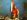

AWURADE NYANKOPON MEDA WO ASE AMEN
AMEN AMEN AMEN AMEN
Psalm
He who dwells in the shelter of the Most High will rest in the shadow of the Almighty.
I will say of the LORD, "He is my refuge and my fortress, my God, in whom I trust.
" Surely he will save you from the fowler's snare and from the deadly pestilence.
AMEN AMEN The LORD is my Shepherd ,
I shall not be in want.
He restores my soul. He guides me in paths of righteousness for his name's sake.
Even though I walk through the valley of the shadow of death, I will fear no evil, for you are with me;
your rod and your staff, they comfort me.
